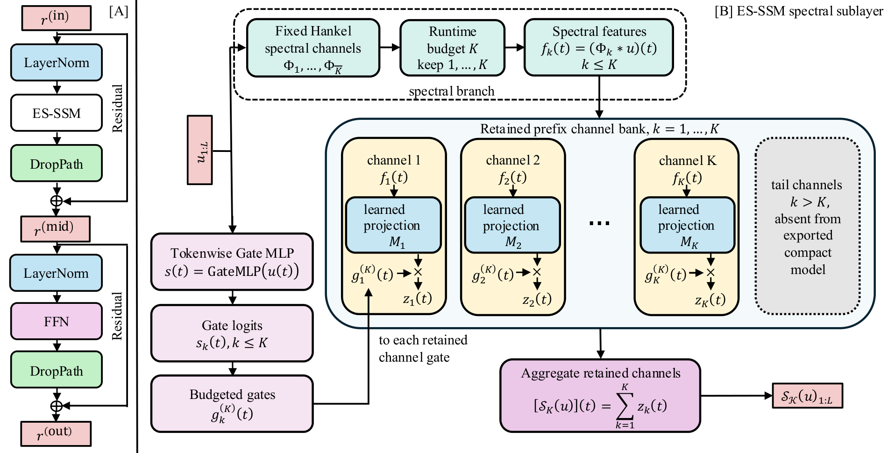
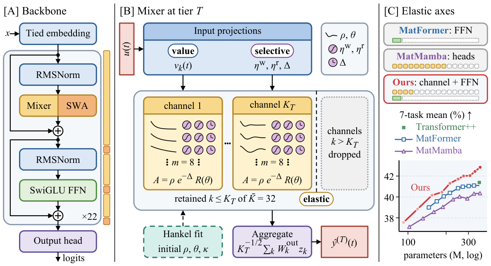
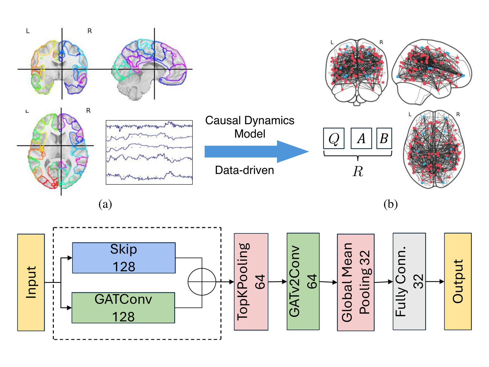
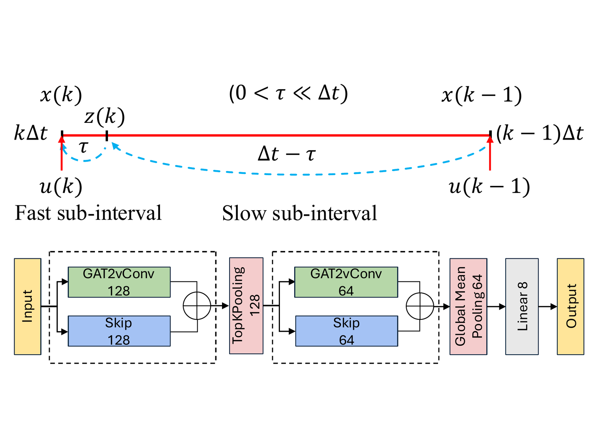

Conference Paper
First author · Accepted poster
NeurIPS 2026Main Track
Dachuan Song, Junyu Yin, Zechen Hu, Xuan Wang
Train once, export compact models for different compute budgets. ES-SSM combines ordered Hankel spectral channels with input-adaptive gates and budget dropout. Direct prefix truncation produces independently deployable models without budget-specific retraining.
Spectral state-space models · Compact model export · Budgeted inference

Preprint
arXiv · 2026
Dachuan Song, Chuchu Chen, Xuan Wang
Selective spectral memory with fast recurrent decoding. ESSH pairs input-dependent decay and write/read gates with sliding-window attention, then exports several model sizes from one trained checkpoint. At 1.53B parameters, fused decoding reached 1.37 ms/token on B300, 2.14–2.80× faster than the tested, parameter-matched Mamba-2/Mamba-3 implementations (batch 1, 2K context).
Selective spectral recurrence · Compact language models · Fused decoding

Preprint
arXiv · 2026
Dachuan Song, Junyu Yin, Zechen Hu, Xuan Wang
Long-context aggregation in a fixed 2 KiB state. SketchOps augments a frozen language model with mergeable summaries of counts and set relations. On 3,969 aggregate-then-reason tasks with Gemma 4 (31B), it achieved 99.2% accuracy without rereading the full history.
SketchOps · Mergeable memory · Long-context aggregation

Conference Paper
ACM BCB · 2024
Oral Presentation
Dachuan Song, Li Shen, Duy Duong-Tran, Xuan Wang
Two-timescale dynamics for subject and task identification. A state-space model reconstructs directional interactions from fMRI time series. Modal features identify subjects, while a graph neural network classifies tasks.
Two-timescale dynamics · State-space modeling · Graph learning

Journal Article
Health Information Science and Systems · 2025
Dachuan Song, Li Shen, Duy Duong-Tran, Xuan Wang
Directed brain dynamics as signatures of subjects and tasks. Reconstructs fast and slow activity and directed interactions from fMRI, then uses these dynamic signatures for identification. A brain reachability map visualizes task-specific patterns across regions.
Dynamic system identification · Temporal modeling · Brain reachability

Video understanding and model compression for surgical systems. Built models for surgical-phase and instrument-action recognition. Compressed and fine-tuned Depth Anything 3 to 29% of its original model size while retaining near-baseline depth-estimation performance.
Computer vision · Surgical video understanding · Model compression · Depth estimation